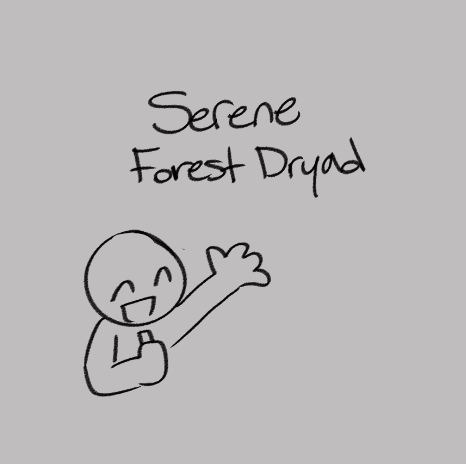
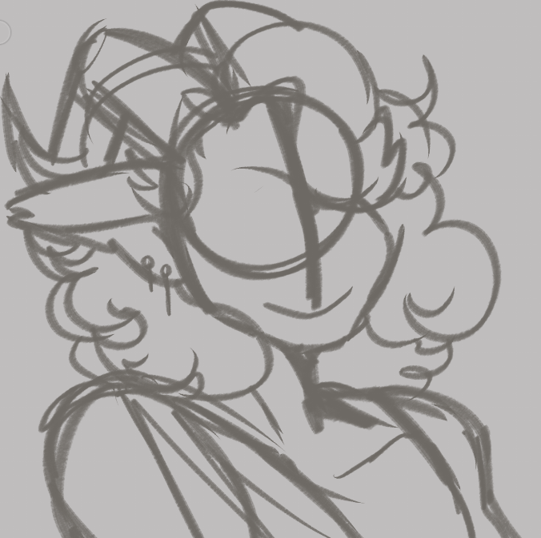

Complete Instructions
-
Step 1: Choose a Concept
Decide on the character type and personality.
 -
Step 2: Sketching the Outline
Create a rough sketch of your character.
 -
Step 3: Define the Features
Add details to your character's face and body. Lineart is optional!
-
Step 4: Color Blocking
Apply base colors to your character.
-
Step 5: Add Shadows and Highlights
Bring depth to your character with shading.

-
Step 6: Final Touches
Add any additional details and make final adjustments.